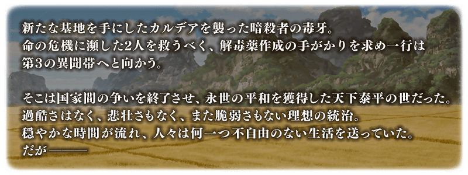
◆公開時間◆
2018年11月27日(二) 21:00～
◆第2部 第3章「Lostbelt No.3 人智統合真國 SIN 紅之月下美人」開幕◆
「人智統合真國 SIN 紅之月下美人」的舞台是B.C.0210?的中國―――
自橫斷天空的長城與廣佈廣大麥田的大地開始新的故事。
由劇本撰寫・虚淵玄(Nitroplus)贈予的「第2部 第3章」，請盡情享受第3個異聞帯舞台！
◆開放條件◆
通過第2部 第3章「Lostbelt No.3 人智統合真國 SIN 紅之月下美人」的序幕(Prologue)「Lostbelt No.3 － intro －」後開放。
※不需要通過亞種特異點(從Ⅰ到Ⅳ)。
在Fate/Grand Order官方網站內首頁及Gallery，公開了第2部 第3章「Lostbelt No.3 人智統合真國 SIN 紅之月下美人」的電視廣告。敬請確認。
動畫製作：A-1 Pictures
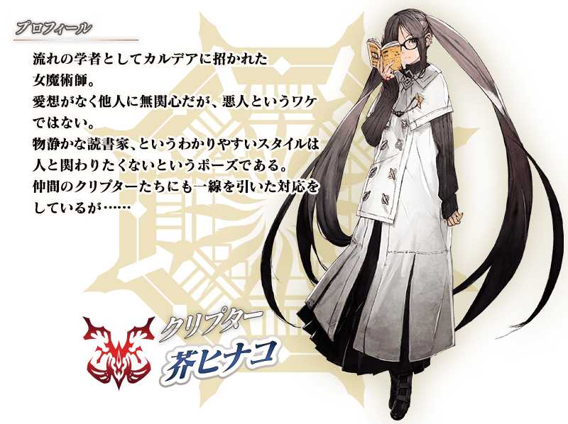
自第2部 第3章「Lostbelt No.3 人智統合真國 SIN 紅之月下美人」追加2種新道具！
為新登場Servant的技能強化及靈基再臨必要的道具。
主要能從於第2部 第3章「Lostbelt No.3 人智統合真國 SIN 紅之月下美人」主線關卡出現的敵人做為戰利品獲得。
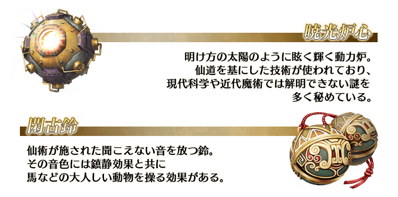
追加可開放絆等級上限的新道具「カルデアの夢火」！
本次為了記念絆上限開放，在達文西工房的「魔力稜鏡交換」追加1個。
◆追加時間◆
2018年11月27日(二) 21:00～
※請注意可在「魔力稜鏡交換」交換的「カルデアの夢火」為限制1次的限定道具。
| 追加道具 | 交換可能次數 | 1次交換所需的 魔力稜鏡數 |
|---|---|---|
| 【絆上限開放記念】 カルデアの夢火 |
1次 | 1個 |
Servant的絆等級上限能開放至15！
想提高Servant的絆等級至11以上，除了絆點數外還需要絆上限開放素材「カルデアの夢火」與「QP」使絆等級的上限提高1。
◆開放時間◆
2018年11月27日(二) 21:00～
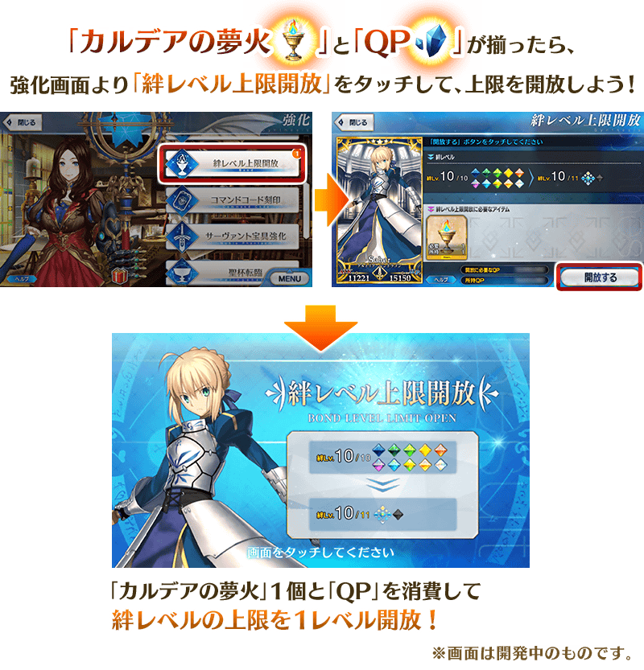
※「カルデアの夢火」與「QP」為做為對象Servant每提高絆等級上限1時都是必須的。
※請注意未到達絆等級10的Servant無法進行絆等級的開放。
※持有複數同樣稀有度、職階、Servant名的Servant的情況，無論哪個Servant的絆等級都會提高成一致的值。
※瑪琇・基利艾拉特與以期間限定加入的Servant為對象外。
※在終局特異點，關於依照Servant的絆等級變化的特殊效果，就算變成絆等級11，也不會從絆等級10的狀態變化。
翻新在第2部 第3章「Lostbelt No.3 人智統合真國 SIN 紅之月下美人」活躍的「★3(R)荊軻」「★1(C)斯巴達克斯」戰鬥動作及寶具演出！
另外，在「Fate/Grand Order」官方網站內的公告中，公開了「★3(R)荊軻」及「★1(C)斯巴達克斯」的寶具演出。敬請確認。
◆翻新時間◆
2018年11月27日(二) 21:00～
【荊軻】
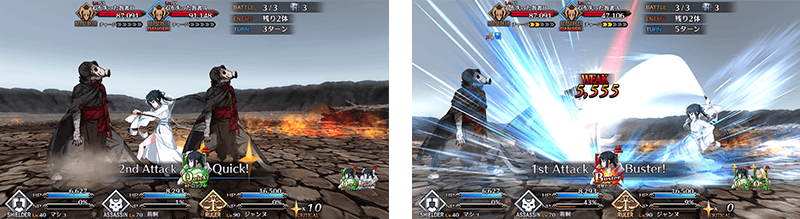
【斯巴達克斯】
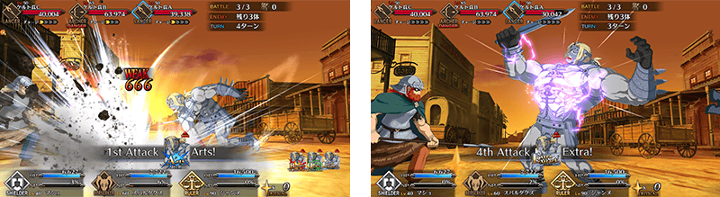

◆「SIN Pick Up召喚(每日交替)」期間◆
期間:2018年11月27日(二) 21:00～12月11日(二) 11:59
為了記念第2部 第3章「Lostbelt No.3 人智統合真國 SIN 紅之月下美人」的開幕，舉辦期間限定「SIN Pick Up召喚(每日交替)」！
※尚未通過第2部 第3章「Lostbelt No.3 人智統合真國 SIN 紅之月下美人」的狀態也能進行「SIN Pick Up召喚(每日交替)」。
在第2部 第3章「Lostbelt No.3 人智統合真國 SIN 紅之月下美人」「★5(SSR)項羽」「★4(SR)蘭陵王」「★4(SR)秦良玉」做為新Servant登場！
並且，進行動作翻新的「★3(R)荊軻」也Pick Up！
本次從上述4位Servant之中「★4(SR)蘭陵王」「★4(SR)秦良玉」以每日交替Pick Up！
「★5(SSR)項羽」「★3(R)荊軻」常駐Pick Up。
詳情請在聖晶石召喚畫面左下的召喚詳細確認。
新規概念禮裝「★5(SSR)火炎伯爵」「★4(SR)彼方の先には」「★3(R)深窓の麗人」也先行新登場！
並且，翻新一部份★3(R)概念禮裝的陣容！
◆有關Servant的注意◆
※請注意「SIN Pick Up召喚(每日交替)」做為每日交替，蘭陵王、秦良玉就算Pick Up期間中也會有不被抽出的日子。
※項羽、蘭陵王、秦良玉從Pick Up召喚舉辦期間結束後的2018年12月11日(二) 12:00追加至故事召喚。
※荊軻在Pick Up期間結束後仍會在故事召喚被抽出。
◆有關概念禮裝的注意◆
※「★5(SSR)火炎伯爵」「★4(SR)彼方の先には」「★3(R)深窓の麗人」從Pick Up召喚舉辦期間結束後的2018年12月11日(二) 12:00追加至故事召喚。
※隨著翻新「★3(R)フリーランサー」成為Pick Up召喚的召喚對象外，只會在故事召喚被抽出。
※2018年12月11日(二) 12:00以後「★3(R)フリーランサー」就算從故事召喚也不會被抽出，追加至友情點數召喚。
Pick Up期間中，新登場Servant、Pick Up Servant的出現機率提升！
10次召喚中確定1張★4(SR)以上和確定1位★3(R)以上的Servant！
※確定★4(SR)以上包含Servant和概念禮裝。
| 每日交替Pick Up期間 | 每日交替Pick Up內容 |
|---|---|
| 11月27日(二) 21:00～ 11月29日(四) 22:59 |
項羽 蘭陵王 秦良玉 |
| 11月29日(四) 23:00～ 12月1日(六) 22:59 |
項羽 蘭陵王 |
| 12月1日(六) 23:00～ 12月3日(一) 22:59 |
項羽 秦良玉 |
| 12月3日(一) 23:00～ 12月6日(四) 22:59 |
項羽 蘭陵王 秦良玉 |
| 12月6日(四) 23:00～12月7日(五) 22:59 | 項羽 蘭陵王 |
| 12月7日(五) 23:00～12月8日(六) 22:59 | 項羽 秦良玉 |
| 12月8日(六) 23:00～ 12月11日(二) 11:59 |
項羽 蘭陵王 秦良玉 |
※請注意會以每日交替變更Pick Up的Servant。


※上述「★5(SSR)項羽」的卡面為靈基再臨第2階段。

※上述「★4(SR)蘭陵王」的卡面為靈基再臨第2階段。

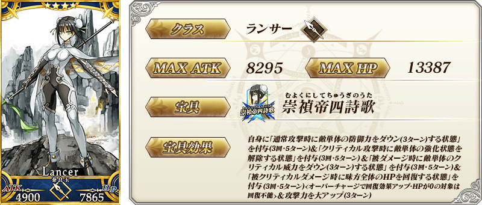
※上述「★4(SR)秦良玉」的卡面為靈基再臨第2階段。

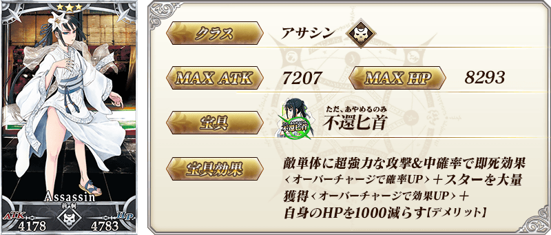
※上述「★3(R)荊軻」的卡面為靈基再臨第2階段。
| 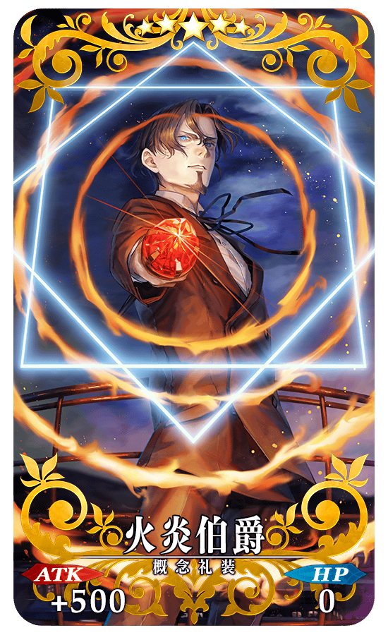 |
★★★★★SSR |
|
★★★★SR |
| 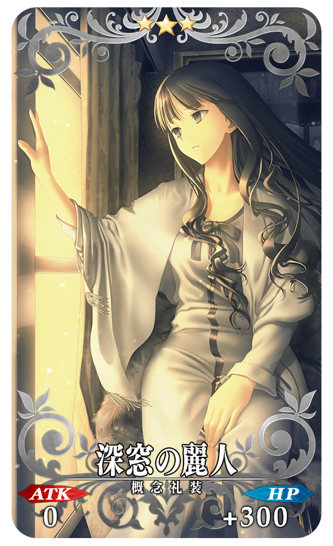 |
★★★R |
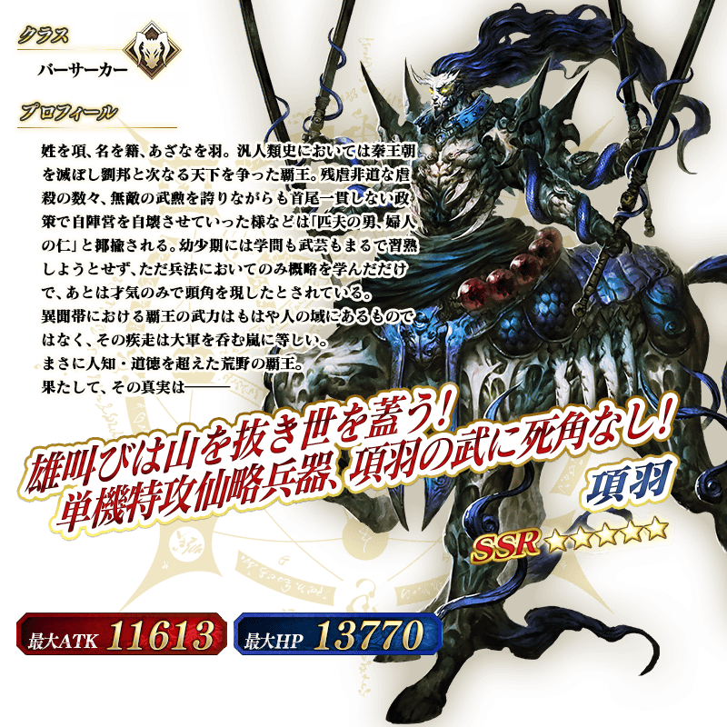
※上述「★5(SSR)項羽」的立繪為靈基再臨第2階段。


※上述「★4(SR)蘭陵王」的立繪為靈基再臨第2階段。
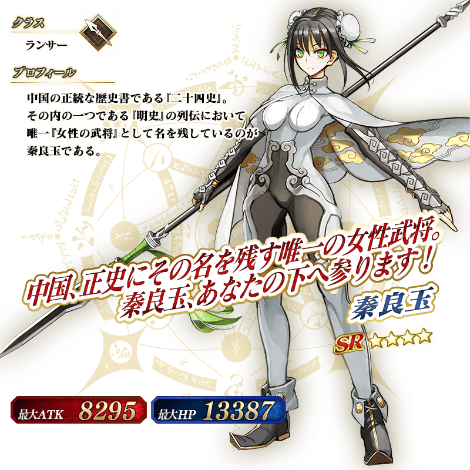
※上述「★4(SR)秦良玉」的立繪為靈基再臨第2階段。
介紹項羽、蘭陵王、秦良玉的寶具演出！
在「Fate/Grand Order」官方網站內的公告中，公開了「★5(SSR)項羽」「★4(SR)蘭陵王」「★4(SR)秦良玉」的寶具演出。敬請確認。
主線關卡第2部 第3章「Lostbelt No.3 人智統合真國 SIN 紅之月下美人」開幕前夕宣傳活動舉辦中！
主線關卡第2部 第3章 開幕前夕登入獎勵和通過第2部 第2章節就拿到聖晶石10個的期間限定Master任務等，關於開幕前夕宣傳活動的詳情請自下述橫幅確認。